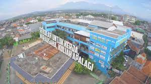

SMK PGRI 3 MALANG |
| Home | Bidang Heahlian | Partnership |
|  |
|
SMK PGRI 3 Malang adalah sekolah kejuruan PGRI terbesar di Jawa Timur, SNI, dan berstandar Internasional dengan motto "SUCCESS BY DISCIPLINE" segala unsur pendidikan yang ada berusaha menjadikan kelas-kelas yang ada di SMK PGRI 3 Malang sebagai kelas perusahaan dengan harapan lulusan bisa terserap sebanyak-banyaknya di industri. Sekolah ini beralamat di Jl. Raya Tlogomas IX/09 Malang. Dan Dalam rangka memantapkan eksistensi dan kepercayaan masyarakat Malang Raya khususnya dan masyarakat Indonesia pada umumnya, sejak tahun 2006 SMK PGRI 3 Malang telah menorehkan Tinta Emas kembali dengan dinyatakan sebagai sekolah "BESAR & NASIONAL " untuk bisa berkiprah di tingkat Nasional dengan predikat Sekolah Nasional. SejarahSMK PGRI 3 Malang dirintis sejak tahun 1986 atas prakarsa dosen muda POLITEKNIK Universitas Brawijaya Malang yang berjumlah 16 orang (terlampir). Berdasarkan hasil pertimbangan dan kesepakatan, sekitar bulan September 1986 para perintis SMK PGRI 3 Malang bersatu untuk mendirikan STM (Sekolah Teknologi Menengah) swasta yang bernaung di bawah yayasan PGRI Kecamatan DAU kabupaten Malang, sehingga sekolah ini diberi nama STM PGRI DAU Malang. Mendirikan sekolah ternyata memerlukan banyak biaya untuk keperluannya. Dalam hal ini, kegiatan belajar-mengajar baik pelajaran teori maupun praktik masih terjadi masalah mengenai tempat dan biayanya. Akhirnya para perintis berupaya dan bersepakat untuk meminjam SD Negeri Tlogomas 2 Malang yang berlokasi di wilayah kecamatan DAU kabupaten Malang sebagai aktivitas belajar-mengajar. Sedangkan mengenai pembiayaannya, mereka (pendiri)-Iah yang harus mengeluarkan sebagian uangnya untuk menyediakan fasilitas praktik bagi siswa atau untuk kebutuhan sekolah yang diperlukan lainnya. Pada tanggal 9 Februari 1987, turun surat keputusan (SK) Pendirian STM PGRI DAU Malang dengan nomor SK.364/32.B-1987 dari Direktorat Pendidikan Dasar Menengah. STM PGRI DAU Malang pada saat itu berstatus tercatat. Berdasarkan SK di atas, akhirnyn pada tanggal 16 Juli 1987, STM PGRI DAU Malang mulai melaksanakan aktivitasnya dalam rangka penerimaan siswa baru yang pertama. Pada saat itu, siswa yang masuk menjadi siswa STM PGRI DAU Malang sebanyak 36 siswa yang terbagi menjadi 2 jurusan yaitu jurusan mesin dan elektronika. Walaupun jumlah siswa relatif sedikit, namun para perintis STM PGRI DAU Malang tidak putus asa untuk terus mengembangkannya. Waktu kian berjalan, mengikuti perkembangan STM PGRI DAU Malang. Siswa STM PGRI DAU Malang lambat laun bertambah sedikit demi Akhirnya sekitar tahun 1991 nama STM PGRI DAU Malang harus mengikuti aturan pemerintah tentang perluasan wilayah Kodya Malang. Dengan perluasan wilayah itulah, akhirnya lokasi SD Negeri Tlogomas 2 Malang kecamatan Dau yang ditempati STM PGRI DAU Malang masuk wilayah Kecamatan Lowokwaru Kodya Malang. Dengan demikian, nama STM PGRI DAU Malang berubah menjadi STM PGRI 2 Malang. Sekitar tahun 1992, STM PGRI 2 Malang dilaksanakan akreditas sekolah yang membawa pengaruh terhadap turunnya SK nomor 488/C/Kep/I/1992/31 Desember, dari Direktorat Pendidikan Dasar Menengah tentang perubahan status, yang awalnya berstatus tercatat berubah menjadi status diakui. Jumlah siswa STM PGRI 2 Malang semakin lama semakin bertambah diikuti oleh bertambahnya jumlah pengajar, fasilitas sekolah atau kualitas pendidikannya.Kepercayaan masyarakat semakin meningkat dalam rangka membantu terciptanya tujuan Pendidikan Nasional. Dengan semakin bertambahnya jumlah siswa, maka STM PGRI 2 Malang berusaha untuk meminjam SD Negeri Tlogomas 3 Malang, SD Negeri Tlogomas I Malang dan SD Negeri Dinoyo I Malang untuk di jadikan tempat belajar-mengajar bagi siswanya. Pada tahun 1997, Pemerintah mengeluarkan aturan untuk mengubah nama Sekolah Teknologi Menengah (STM) menjadi Sekolah Menengah Kejuruan (SMK). Karena STM PGRI 2 Malang merupakan salah satu sekolah dasar menengah yang bisa dikategorikan sekolah kejuruan. Maka dengan demikian STM PGRI 2 Malang berubah nama menjadi SMK PGRI 4 Malang. Perubahan nomor 2 ke nomor 4 tersebut karena SMK (STM atau SMEA) ynng bernaung di bawah yayasan PGRI di kodya Malang itulah yang menyebabkan STM PGRI 2 Malang menduduki urutan ke-4. Sekitar tahun 1998, ada perpindahan salah satu SMK PGRI yang ada di wilayah Kodya Malang ke wilayah Kabupaten Malang. Hal tersebut menyebabkan nama SMK PGRI 4 Malang harus berubah nama lagi menjadi SMK PGRI 3 Malang sampai sekarang. Dengan pengelolaan dan kerjasama yang baik dari para perintis sekolah, dewan guru serta karyawan/karyawati SMK PGRI 3 Malang, akhirnya sekolah ini mengalami perkembangan yang cukup pesat. Perkembnngan itu dapat dilihat dari peningkatan kuantitas siswa ataupun kualitas pendidikan siswa. Pada tahun 1997, SMK PGRI 3 Malang menempati gedung baru di Jalan Tlogomas XI/29 Malang yang merupakan hasil swadaya maupun swadana pendiri sekolah, dewan guru serta karyawan/karyawati SMK PGRI 3 Malang. Dengan ditempatinya gedung baru itulah, akhirnya SD Negeri Tlogomas I Malang dan SD Negeri Dinoyo I Malang dikembalikan ke pihak SD tersebut. Dan sekarang tinggal SD Negeri Tlogomas 2 Malang dan SD Negeri Tlogomas 3 Malang yang berada di Jalan Tlogomas nomor 1 dan gedung baru di Jalan Tlogomas IX/29 Malang yang digunakan untuk aktivitas belajar-mengajar SMK PGRI 3 Malang. Pembangunan gedung SMK PGRI 3 Malang, kian hari kian mengembangkan sayapnya mengikuti perkembangan jumlah perkembangan siswa yang semakin banyak dan kebutuhan belajar mengajar yang semakin meningkat. Dengan demikian, untuk memenuhi kebutuhan itulah, maka jumlah ruangan belajarpun mengalami penambahan pula. Akhirnya sejak tahun pelajaran 2001-2002, SMK PGRI 3 Malang sudah bisa sepenuhnya menempati gedung sendiri di jalan Tlogomas IX/29 Malang. SMK PGRI 3 Malang adalah sebuah lembaga pendidikan yang menyelenggarakan dan mengembangkan ilmu pengetahuan, teknologi serta ketrampilan untuk mencerdaskan kehidupan bangsa dalam rangka mencerdaskan dan memberdayakan kehidupan manusia Indonesia. Program keahlian yang ada mulai tahun ajaran 1999/2000 adalah Teknik Mesin Perkakas, Teknik Las, Mekanik Otomotif, Bodi Otomotif, Teknik Informatika dan Elektronika Industri. Sejak berdiri sampai tahun 1999 SMK PGRI 3 Malang memiliki jurusan Teknik Mekanik Umum dan Teknik Elektronika Komunikasi. Sumber Daya Manusia dan sumber daya finansial SMK PGRI 3 Malang banyak terdukung oleh sumber dari siswa maupun swadaya dari para pengajar dan pengelola dalam pengadaan fasilitas maupun pelaksanaan pendidikan secara umum. Pengajar yang merupakan salah satu unsur penentu kualitas anak didik di SMK PGRI 3 Malang bersumber dari lulusan S1 dan S2, dan dalam rangka kesesuaian ouput dengan dunia kerja setiap semester SMK PGRI 3 Malang selalu melaksanakan program kerja industri yang dilaksanakan oleh siswa dengan monitoring secara kontinu oleh para pembimbing PRAKERIN. Dari hasil monitoring dan laporan siswa sering dijadikan oleh pengajar dan manajemen untuk selalu mengadaptasi perubahan yang terjadi memperkirakan perkembangan yang akan terjadi di dunia kerja khususnya & kebutuhan masyarakat pada umumnya. |
| SISTEM INFORMASI 2021 |